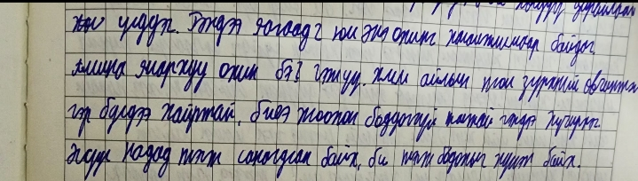
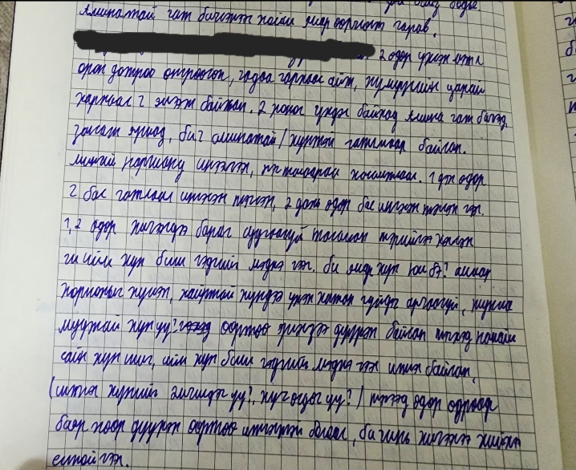
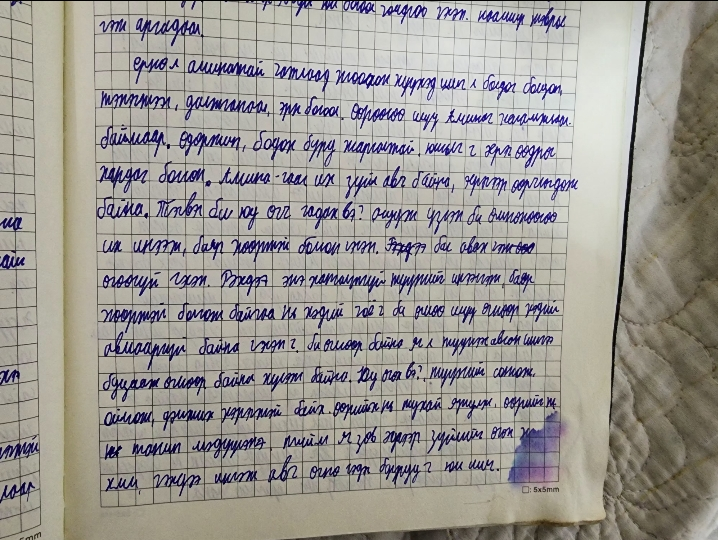
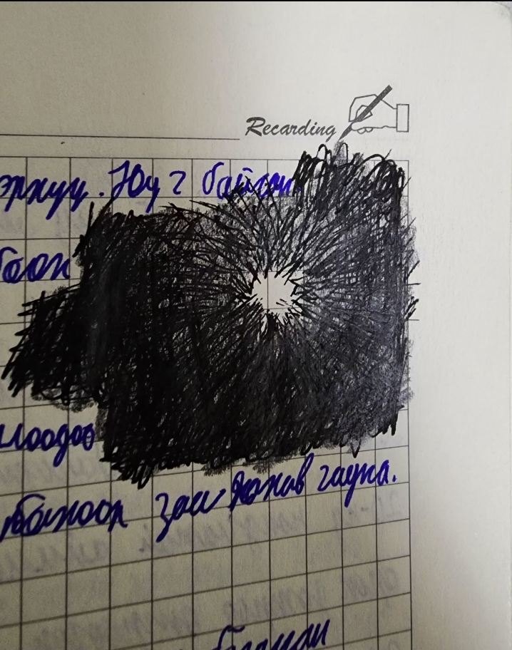
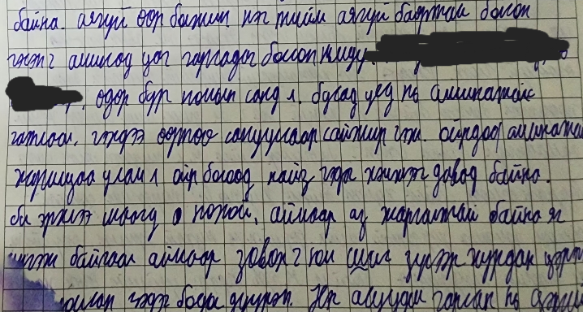

2024/9/30
 2024/10/2
2024/9/24 туханй үед өөрийнхөө нөхцөл байдал доторх чамайг зүйрлэн зурсна нь хонгилийн үзүүрээс гэр гарч буй мэтээр чамайг илэрхийлэх гэсэн нь
2024/10/4
цааш байгаа ч өдрийн тэмдэглэлээ цааш нь уншихаас төвөгшөөгөөд байгаа тул дараа оруулна